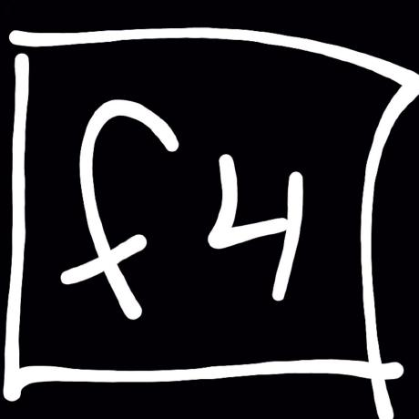
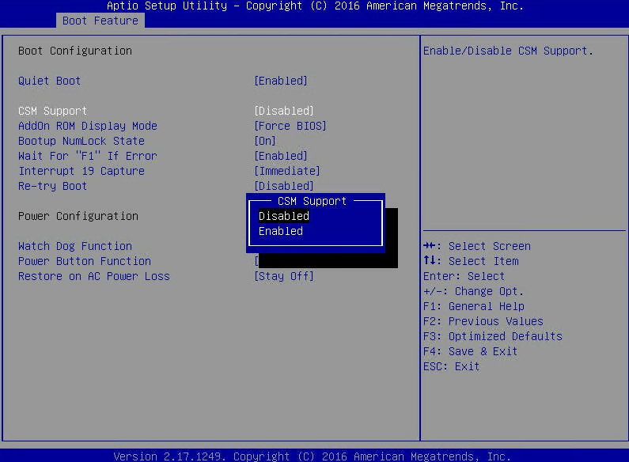
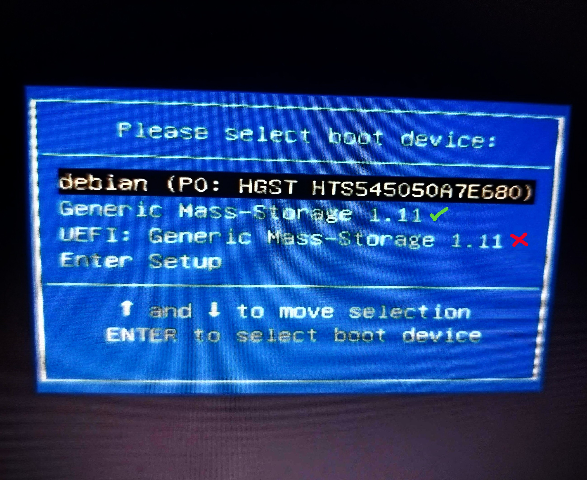
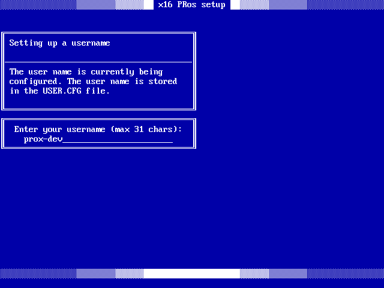

PRos is a minimalistic 16-bit operating system written in NASM for x86 architecture. It features a command-line interface, FAT12 file system support, and a rich set of system calls.
System Lightweight
Occupies < 200 KB on disk and optimized for 1.44 MB floppy disks.
Rich API
Provides interrupt-driven APIs for output, file operations, and string manipulation.
Educational
Ideal for learning OS development and low-level programming.
People behind the x16-PRos project — software creators, sponsors, and helpers.
PRoX-dev
Lead developer. The creator of the kernel, the operating system, the terminal, drivers, API functions, multimedia, disk and graphics management, and almost the entire software package.
Qwez-dev
The creator of the game "Space Arcade" and build scripts for Windows.

Han Akbe sponsor
Has corrected grammar in project documentation. Edited and improved kernel code. Provided valuable advice. Developed libc for x16-PRos. An active member of the community. Also supported the project financially.
Ilnar Karazbaev sponsor
The creator of the MEMORY program, the developer of libc for x16-PRos, an active member of the community.
Saeta
Helped fix a serious file system API bug and created the first version of calc. Before creating the API, she developed a library with basic functions.
Loxsete
Barchart program creator. At the beginning of development, helped with the kernel code.
Gabriel
Percentages program creator.
Cuzhima
Hex-edit program creator.
litvincode
v0.2 calculator creator.
Green_Bushy - 1 024 RUB
tanushqn - 400 RUB
tomoko - 248 RUB
Vokich - 100 RUB
Running x16-PRos on Real Hardware
x16-PRos is designed for 1.44 MB floppy disks but can also run from a USB flash drive. Follow these steps to set up x16-PRos on real hardware. Use the .IMG image for persistent storage or the .ISO image for a live CD experience without saving changes.
Select the Device
Choose a USB flash drive or floppy disk to write the x16-PRos system image. For USB drives, ensure the drive is formatted as FAT12. The .IMG image supports persistent changes, while the .ISO image is for temporary, live sessions.
Write the Image
Download the x16-PRos system image (.IMG or .ISO) and use a tool like Rufus to burn it to your USB drive. Select your USB drive and the image in Rufus, then click START. Wait for the process to complete before safely ejecting the drive.
Configure BIOS for UEFI Systems
x16-PRos relies on BIOS system calls and does not support UEFI directly. If your computer uses UEFI, enable CSM in the UEFI settings. Enter the UEFI setup by pressing keys like F2 or DELETE during boot (check your motherboard manual for the exact key). Locate and enable CSM support.

Change DISABLED to ENABLED for CSM support.Access the Boot Menu
Restart your computer and enter the boot menu (typically using F8, F11, F12, or ESC). Select the USB drive option labeled "USB" (not "UEFI") to boot PRos.

Select your USB flash drive from the boot menu.Boot x16-PRos
Press ENTER to start the boot process, which takes approximately 2-5 seconds. Upon first launch, you'll see the PRos installation screen.

The initial installation screen for x16-PRos.
Running x16-PRos on Emulators
Emulators are ideal for developers and testers. PRos supports several emulators, with QEMU being the most straightforward option. Follow these steps to run PRos on QEMU.
Install QEMU
Install qemu-system-x86_64 or qemu-system-i386 using your package manager. For example, on Debian-based systems:
sudo apt install qemu-system-x86
# Or
sudo apt install qemu-system-i386
For Arch Linux with audio support, install the PulseAudio package:
sudo pacman -S qemu-audio-pa
Run x16-PRos in QEMU
Launch x16-PRos using the following command, ensuring you have the x16-PRos.img image file:
This command configures QEMU with audio support and boots the PRos image from a virtual floppy disk.
PRos Terminal Commands
The PRos Terminal is a powerful command-line interface for interacting with the OS, supporting commands for disk operations, program execution, and multimedia tasks.
Basic Commands
Command
Description
help
Display categorized command reference with navigation
info
Show system information and OS details
cls
Clear terminal screen
ver
Display PRos terminal version
exit
Exit to bootloader
System Information
Command
Description
cpu
Display detailed CPU information (family, model, cores, cache)
date
Show the current date (DD/MM/YY format)
time
Show current time (HH:MM:SS format, with timezone)
File Operations
Command
Syntax
Description
dir
dir
List files in the current directory with size info
cat
cat <filename>
Display file contents
size
size <filename>
Show file size in bytes
del
del <filename>
Delete a file (kernel.bin protected)
copy
copy <source> <dest>
Copy file (root directory only)
ren
ren <old> <new>
Rename file (root directory only)
touch
touch <filename>
Create an empty file
write
write <file> <text>
Write text to a file
Text Processing
Command
Syntax
Description
grep
grep <file> <text>
Search for text in a file with line/column highlighting
head
head <filename>
Display the first 10 lines of a file
tail
tail <filename>
Display the last 10 lines of a file
Directory Operations
Command
Syntax
Description
cd
cd <dirname>
Change directory (use .. for parent, / for root)
mkdir
mkdir <dirname>
Create a new directory
deldir
deldir <dirname>
Delete an empty directory
tree
tree
Display directory structure as a tree
Disk Management
Command
Syntax
Description
dlist
dlist
List available drives with size and usage
drive
drive <letter>
Switch to another disk drive
Media & Display
Command
Syntax
Description
view
view <file> [-upscale]
Display BMP image with optional 2x scaling
chars
chars
Display ASCII character table
theme
theme <name>
Change color theme (DEFAULT/GROOVYBOX/UBUNTU)
font
font <name>
Switch font (DEFAULT/BOLD/THIN/ITALIC)
Power Management
Command
Description
shut
Shutdown system via APM
reboot
Restart system
API Documentation
x16-PRos provides interrupt-driven APIs for developers. Each function is selected via the AH register.
All functions preserve registers via pusha/popa unless output registers are specified.
On error, the carry flag (CF) is set.
INT 0x21Output API
INT 0x22File System API
INT 0x21 — Output API
Handles screen output in VGA 640×480 16-color mode. All text functions support newline (0x0A) conversion to CR+LF.
Display Functions
AH
Function
Input
Output / Notes
0x00
Initialize Output
—
Sets VGA mode 0x12 (640×480, 16 colors)
0x01
Print String (White)
SI = string ptr
Color 0x0F
0x02
Print String (Green)
SI = string ptr
Color 0x0A
0x03
Print String (Cyan)
SI = string ptr
Color 0x0B
0x04
Print String (Red)
SI = string ptr
Color 0x0C
0x05
Print Newline
—
Outputs CR+LF
0x06
Clear Screen
—
Resets video mode (same as 0x00)
0x07
Set Text Color
BL = color (0x00–0x0F)
Sets global color for function 0x08
0x08
Print String (Custom)
SI = string ptr
Uses color set by 0x07
Font Control
AH
AL
Function
Input
Notes
0x09
0x00
Restore Default Font
—
Restores BIOS ROM font
0x09
0x01
Load Default Custom Font
—
Loads built-in CP866 font
0x09
0x02
Load Font from File
SI = filename ptr
Loads custom .FNT file from disk
Date & Time
AH
Function
Output
0x0A
Get System Time
CH = hours, CL = minutes, DH = seconds
0x0B
Get System Date
CH = century, CL = year, DH = month, DL = day
VGA 16-Color Palette Reference
0x00 Black
0x01 Dark Blue
0x02 Dark Green
0x03 Dark Cyan
0x04 Dark Red
0x05 Dark Magenta
0x06 Brown
0x07 Light Gray
0x08 Dark Gray
0x09 Blue
0x0A Green
0x0B Cyan
0x0C Red
0x0D Magenta
0x0E Yellow
0x0F White
INT 0x22 — File System API
Manages files on FAT12 disks. Filenames must be in 8.3 format (e.g. FILE.TXT), case-insensitive (auto-uppercased).
Limitations: Root directory max 224 entries. Standard load (0x02) limited to 64 KiB; use 0x10 (Load Huge File) for larger files across segments.
Program Examples
Below are example programs demonstrating the use of PRos APIs, written in NASM for the 16-bit x86 architecture.
Hello, World
Description: A simple program to output a text string to the terminal.
[BITS 16]
[ORG 0x8000]
start:
mov ah, 0x01 ; API output print white string function
mov si, hello_msg ; String to output
int 0x21 ; Call the API function
ret ; Return to the terminal
hello_msg db 'Hello, PRos!', 10, 13, 0
Print Colored Strings
Description: A program to output the same string in multiple colors using different API functions.
[BITS 16]
[ORG 0x8000]
start:
mov ah, 0x01 ; API output print white string function
mov si, hello_msg ; String to output
int 0x21 ; Call the API function
mov ah, 0x02 ; API output print green string function
mov si, hello_msg
int 0x21
mov ah, 0x03 ; API output print cyan string function
mov si, hello_msg
int 0x21
mov ah, 0x04 ; API output print red string function
mov si, hello_msg
int 0x21
ret ; Return to the terminal
hello_msg db 'Hello, PRos!', 10, 13, 0
Input name and print greeting
Description: A program that asks for a name and then displays a greeting using API output and API string.
[BITS 16]
[ORG 0x8000]
start:
mov ah, 0x01
mov si, prompt
int 0x21
; Get username input
mov ah, 0x08 ; API string input string function
mov si, user_name ; Buffer
int 0x23 ; Call the API function
; Print newline
mov ah, 0x05
int 0x21
; Print "Hello + NAME"
mov ah, 0x01
mov si, hello_msg
int 0x21
mov ah, 0x01
mov si, user_name
int 0x21
; Print newline
mov ah, 0x05
int 0x21
ret ; Return to the terminal
prompt db 'Enter your name: ', 0
hello_msg db 'Hello, ', 0
user_name times 32 db 0